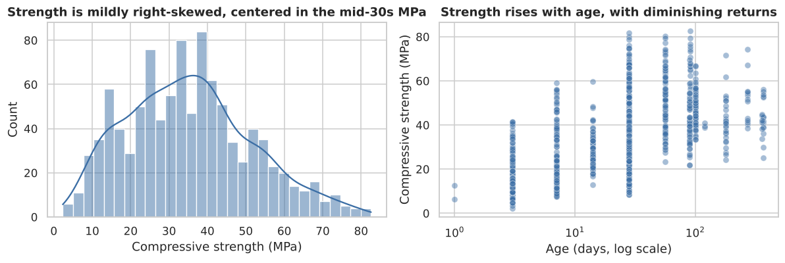
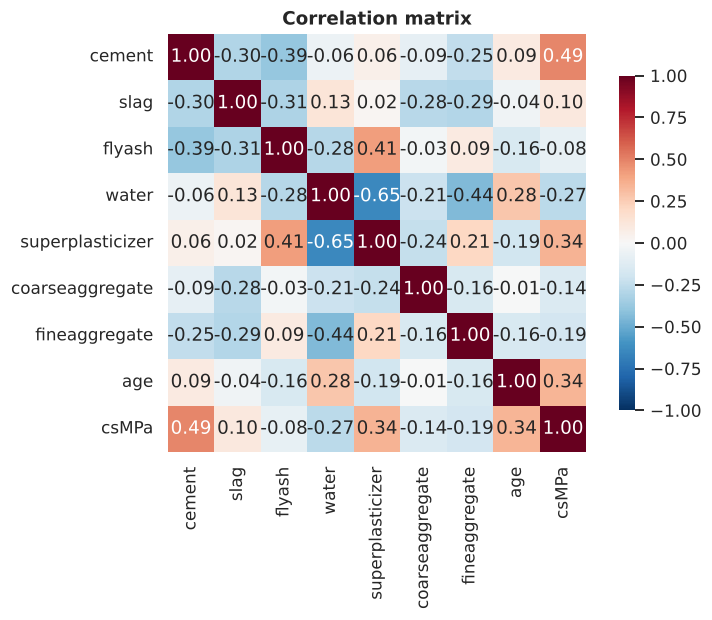
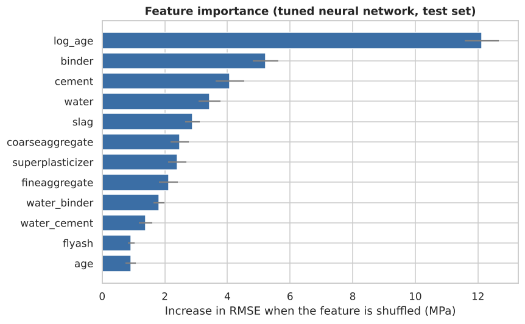
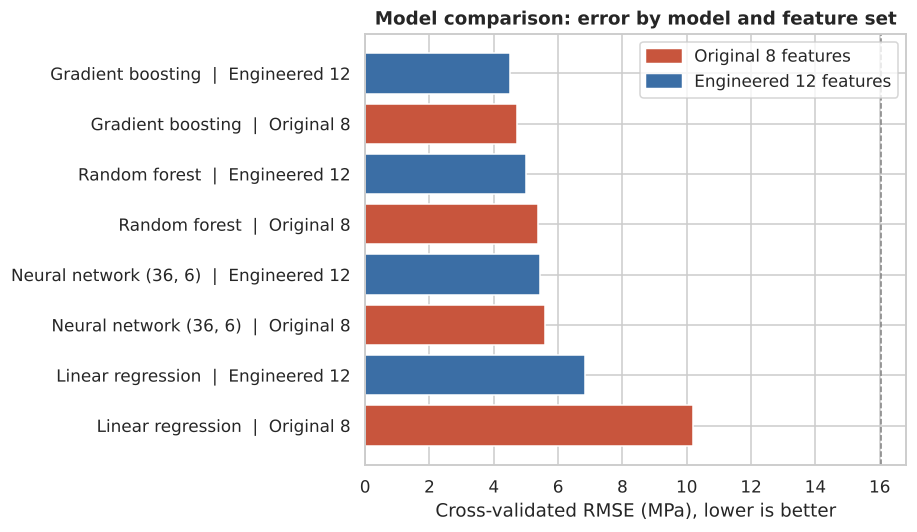
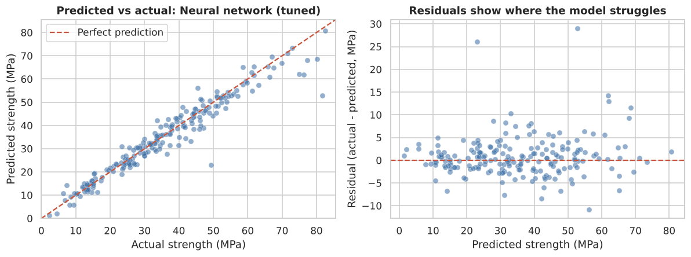

Concrete mix design depends on 28-day cylinder tests to confirm compressive strength. That cure time means engineers wait weeks before approving a mix or a pour, slowing projects and tying up materials. They need an early strength estimate from mix proportions alone, so decisions can be made in hours instead of weeks.
Public UCI Concrete Compressive Strength dataset — 1,030 lab samples with mix ingredients (cement, slag, fly ash, water, superplasticizer, coarse aggregate, fine aggregate, age) and measured compressive strength in MPa.


Cleaned and validated the data in Python, then trained a tuned neural network to predict strength from mix proportions. Compared it against linear regression and gradient boosting baselines using held-out evaluation, checking that age and binder weight were handled correctly as non-linear drivers.

The tuned neural network reaches R² 0.93, RMSE 4.6 MPa and MAE 2.9 MPa on held-out data, about 38% lower error than linear regression (7.4 MPa RMSE). Gradient boosting is essentially tied with the neural network. On unseen recipes, expect about 5 MPa RMSE. Age is the biggest driver, then binder, cement and water.


On unseen recipes, expect about 5 MPa RMSE. Degradation from held-out results suggests the model is sensitive to mix compositions outside the UCI range. The dataset covers lab-cured samples at controlled ages; field conditions (temperature, curing variability, aggregate moisture) are not represented. Strength predictions should be verified with physical testing before structural use.